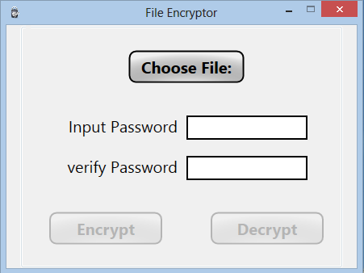
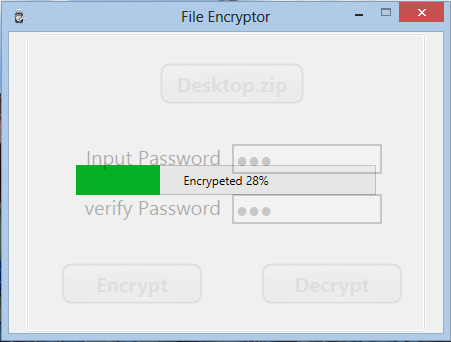
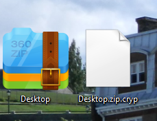

About this Encryptor
I think the majority of people have some files they want to protect, such as their contact lists, passwords or family photos and videos. I do as well. I used a free file protection application to handle the issue until the makers upgraded the app. Unfortunately, the newest version cannot properly decrypt the files encrypted by the previous version. I found the change to be ridiculous and took it in my own hands to write a small encryptor for my own. Here is it:
File Encryptor
The tool is as follows. You can simply choose any kind of files you want. Based on my test, it can handle larger files such as HD movie quite well.

After you choose the file and input the password twice correctly, the "Encrypt" button will be enabled. Click the button and the tool will start to encrypt as shown:
The decryption operation is the same

After encryption, the tool generates the encrypted file with ".cryp" file extention

Syntactic sugar from .Net
Since it is my playground, I kind of overused some cool features in C# just for fun. New C# developers may be interested in it.
I made encrypt and decrypt methods as extension methods for FileInfo. Extension methods make the sweet LINQ possible. If you are interested in it, please go check Extension Methods (C# Programming Guide)
public static IEnumerable EncryptFile(this FileInfo fileInfo, string password)
//when you call this method
var target = new FileInfo(fileName);
target.EncryptFile(Password)
To measure the progress of encryption/decryption, the meothd return IEnumerable<double> with yield. The method returns the percentage of progress when every 1 percent of encryption/decrpytion job is done.
EncryptFile
public static IEnumerable<double> EncryptFile(this FileInfo fileInfo, string password)
{
FileStream fsCrypt = null;
FileStream fsIn = null;
CryptoStream cs = null;
RijndaelManaged RMCrypto = null;
try
{
UnicodeEncoding UE = new UnicodeEncoding();
byte[] temp = UE.GetBytes(password).Where(p => p!= 0).Select(a =>a).ToArray();
byte[] key = UE.GetBytes("****************").Where(p => p != 0).Select(a => a).ToArray();
if (temp.Length > 16) throw new ArgumentException("Password can't be more than 16 characters");
for (int i = 0; i < temp.Length; i++)
{
key[i] = temp[i];
}
string cryptFile = fileInfo.FullName+".cryp";
fsCrypt = new FileStream(cryptFile, FileMode.Create);
RMCrypto = new RijndaelManaged();
RMCrypto.Key = key;
RMCrypto.IV = key;
ICryptoTransform transform = RMCrypto.CreateEncryptor();
cs = new CryptoStream(fsCrypt,
transform,
CryptoStreamMode.Write);
fsIn = fileInfo.Open(FileMode.Open);
var count = 1;
int data;
while ((data = fsIn.ReadByte()) != -1)
{
cs.WriteByte((byte)data);
if (count % (fsIn.Length / 100) == 0)
yield return count / (fsIn.Length / 100);
count++;
}
}
finally
{
if (fsIn != null) fsIn.Close();
if (cs != null) cs.Close();
if (fsCrypt != null) fsCrypt.Close();
if (RMCrypto != null) RMCrypto.Dispose();
}
}
DecryptFile
public static IEnumerable<double> DecryptFile(this FileInfo fileInfo, string password)
{
FileStream fsCrypt = null;
FileStream fsOut = null;
CryptoStream cs = null;
RijndaelManaged RMCrypto = null;
try
{
UnicodeEncoding UE = new UnicodeEncoding();
byte[] temp = UE.GetBytes(password).Where(p => p != 0).Select(a => a).ToArray();
byte[] key = UE.GetBytes("****************").Where(p => p != 0).Select(a => a).ToArray();
if (temp.Length > 16) throw new ArgumentException("Password can't be more than 16 characters");
for (int i = 0; i < temp.Length; i++)
{
key[i] = temp[i];
}
fsCrypt = fileInfo.Open(FileMode.Open);
RMCrypto = new RijndaelManaged();
cs = new CryptoStream(fsCrypt,
RMCrypto.CreateDecryptor(key, key),
CryptoStreamMode.Read);
var outputFile = fileInfo.FullName.Remove(fileInfo.FullName.Length - 4);
fsOut = new FileStream(outputFile, FileMode.Create);
var count = 1;
int data;
while ((data = cs.ReadByte()) != -1)
{
fsOut.WriteByte((byte)data);
if (count % (fsCrypt.Length / 100) == 0)
yield return count / (fsCrypt.Length / 100);
count++;
}
}
finally
{
if (fsOut != null) fsOut.Close();
if (cs != null) cs.Close();
if (fsCrypt != null) fsCrypt.Close();
if (RMCrypto != null) RMCrypto.Dispose();
}
}
And in xaml.cs file. You need a thread to handle the cryption job
Task.Factory.StartNew(() =>
{
foreach (var percentage in target.EncryptFile(passwordbox1.Password))
{
Dispatcher.BeginInvoke(new Action(() =>
{
prgbar.Value = percentage;
prgText.Text = string.Format("Encrypeted {0}%", percentage);
}), null);
}
Dispatcher.BeginInvoke(new Action(
() => prgGrid.Visibility = System.Windows.Visibility.Collapsed
));
});